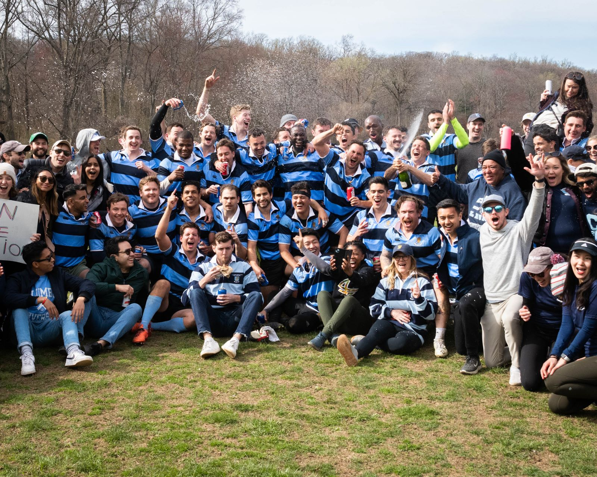
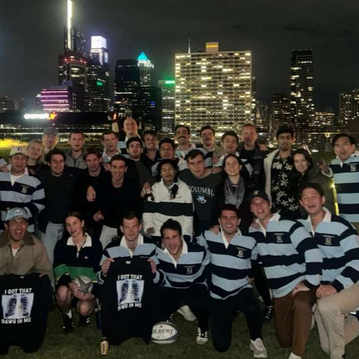

Legacy & Grit
"The best choice I have made at CBS"
WHY RUGBY?

The Ultimate Team Sport
Why Rugby? Because it's fun, that's why!
Rugby at CBS is a unique blend of tradition, competition, and community that is incredibly hard to get elsewhere during your grad experience. The sport of rugby itself is built on principles of respect and teamwork, and that definitely translates to the camraderie you build in 18 - 24 months.
The graduate experience brings together all kinds of people - come join the club that unites everyone through one incredible sport.
THE FOUNDING STORY
"What started over beers has lasted over five decades."
In the spring of 1968, a group of Columbia Business School Class of '69 students gathered over beers and hatched plans that would become the oldest club at CBS. Led by Rob Reveley — who had played rugby in the Peace Corps in Jamaica — alongside Nick Kaufmann, Alan Scott, and Jacko Jackson (the clown prince of rugby!), they fielded their first team in the fall of 1968.
Playing in Riverside Park and Gaelic Park, hosting legendary parties at Uris Hall, and touring Nassau and Jamaica, the Club grew from 15 warm bodies in jerseys to two full sides by fall 1969 — and an undefeated season by spring 1971.
Other original members include Jim Fusco, Jack McFadden, Lou Allstadt, George Ruffner, Tom Carley, Frank Jewett, Jim Rowland, Ralph Fletcher, Bob McLean, Martin Hartigan, and Patrice Maubourguet.
OUR STORY
THE FOUNDATION
The Columbia Business School Rugby Football Club was born from the grit and vision of MBA students seeking competition and camaraderie. Established in 1968, the club quickly became a pillar of the CBS community.
EXPANDING THE PITCH
As the MBA landscape evolved, so did CBS RFC. The MBA World Cup is created in 1981, bringing together the best MBA rugby teams from around the world.
A GLOBAL TRADITION
Today, CBS RFC remains one of the most active clubs on campus. With a diverse roster of students from around the world, we continue to grow our organization. Today, we are honored to host the MBA Rugby World Cup 2026, and hope to do so many years to come.
OUR VALUES
Respect
Respect for team-mates, opponents, match officials and those involved in the game is paramount.
Teamwork
Work together and work hard to foster a brotherhood and a sisterhood you will remember forever.
Fun
Most importantly, have fun. We try and make every moment of your grad experience count.